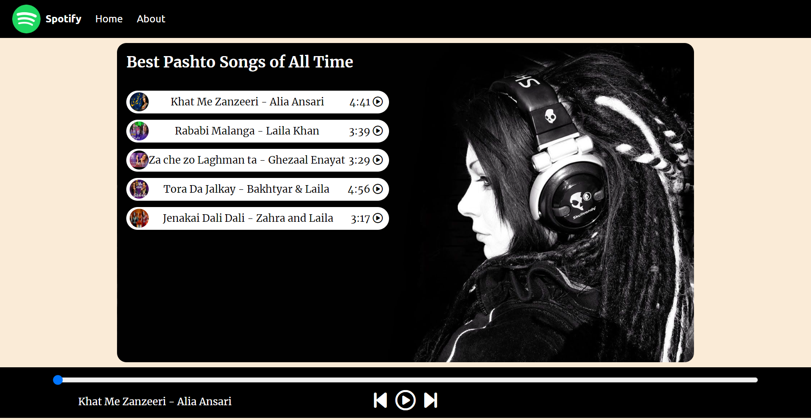
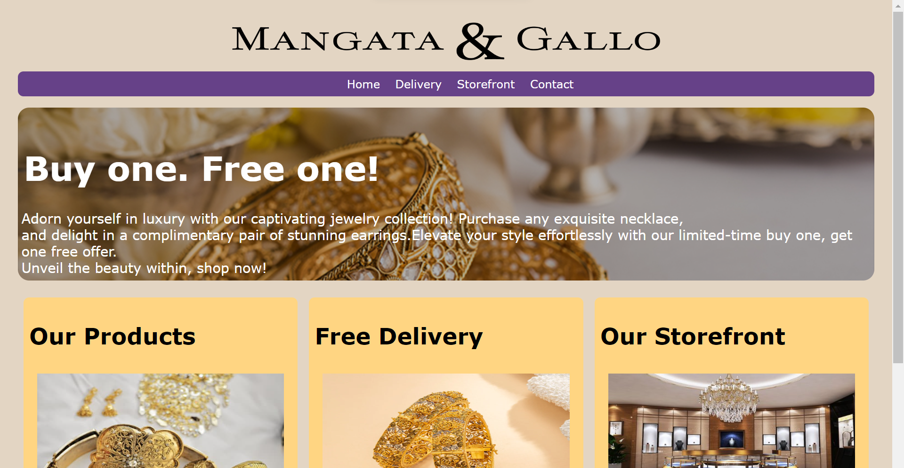

My Projects

Spotify Clone
A simple clone of spotify with a single playlist, having the functionality of play, pause, next, previous and much more. Developed using html, css & vanella js only.

Home page of Jewellery store
Home page for Jewellery store with some animation through css. Developed using html & css only